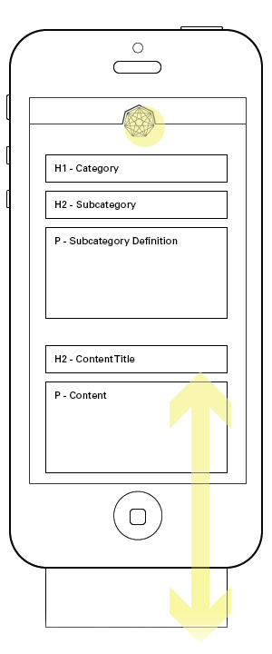
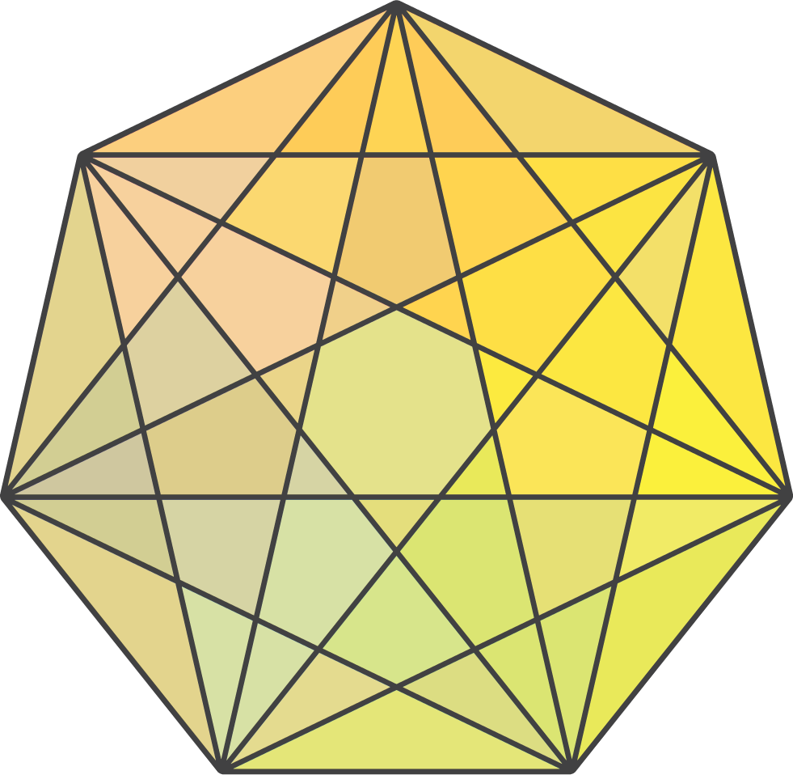

Austin Sustainability
For the City of Austin's Office of Sustainability
Question
How do I clearly organize and present data across multiple devices?
Context
The City of Austin gathered data to describe the city's progress toward sustainability and sought to make their findings clear and accessible for its citizens.
I was tasked to create all interface that packaged their content in clear and compelling way. They required the design to support multiple devices and be simple enough to easily add and update content.
Disciplines
- Data Visualization
- Interaction Design
- User Experience Design
- User Interface Design
Skills and Processes
- Wireframing
Tools
- Illustrator/Photoshop

High-fidelity Wireframes
High-fidelity wireframes for all 44 categories were created to assist the content strategist and web developer.
Multi-touch Table
Also built to be used on a multi-touch table
1

2

Wireframes
Lo-fidelity wireframes demonstrate how user’s flow through the interface.
3

4
5
6

7
8
Nothing

Climate and Energy

Natural Systems

Equity and Empowerment
Health and Safety

Arts, Education, and Culture

Economy and Jobs

Built Environment

Color System
I developed a color system to mirror the heirarchy of the site to help with navigation.

Sketches
I explored alternative designs, but disregarded them for a design using minimal javascript and CSS transitions.


This portfolio is coded by Scott Eshbaugh.